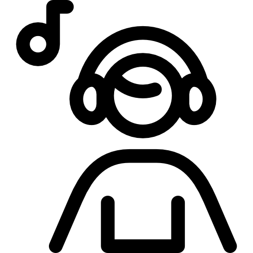
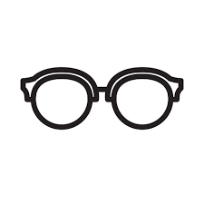
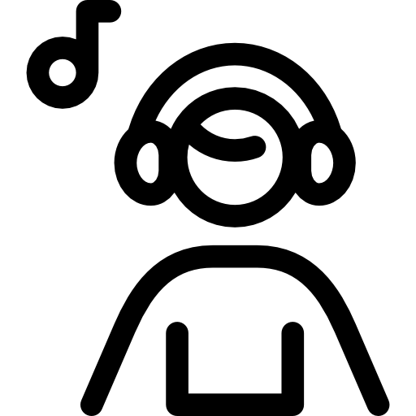
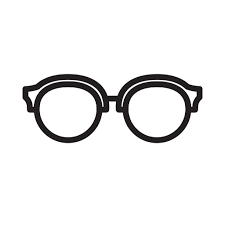

CONTACTOS


@gmail.com
+57 312 812 1418
ubicacion
En proceso
HABILIDADES
crear
innovar
SOFTWARE
HOBBIES
 



Nicol Munevar
DESARROLLO EN FRONTEND
El desarrollo web Front-end consiste en la conversión de datos en una interfaz gráfica para que el usuario pueda ver e interactuar con la información de forma digital usando HTML, CSS y JavaScript.
INFORMACION PERSONAL
Poner en práctica todos los conocimientos adquiridos durante mi formación, poder compartirlos y mejorarlos en los espacios de trabajo para así desarrollarme personalmente y profesionalmente.
Obtener un lugar en la programación contribuiría con mi aprendizaje y me aportaría experiencia laboral, para el logro de metas generales y mi superación personal.
EDUCACION
2022
2022
2021
2021
Uso y manejo del ingles
Instituto Univesal, Bogota
Desarrollo en Frontend, creacion de paginas web y su interfaz
grafica utilizando lenguajes como HTML y JavaScript
DISRUPTIA, Soacha
Alianzas y Redes
IDPAC UNAD
Bachiller Academico
liceo Pedagogico Cundinamarca
EXPERIENCIA
2014
2022
- Liderazgo, manejo de grandes grupos donde muestro una conexión con mis compañeros para así mismo liderarlos en momentos de trabajo en equipo.
- Grupos a distancia, el manejo y la disposición para trabajar en equipo con diferentes personas desde la virtualidad en plataformas como (zoom, Google Meet).